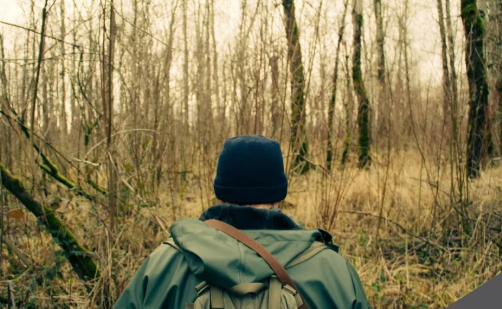
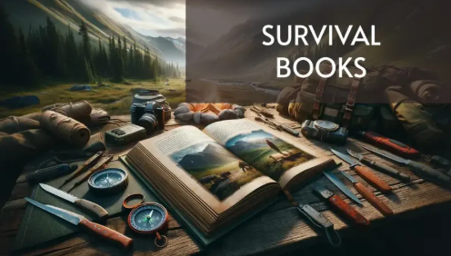
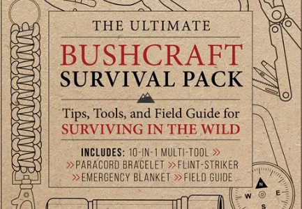

Domine a Arte da Sobrevivência

Em um mundo imprevisível, a preparação é a chave. Nosso pacote oferece as habilidades e o conhecimento
necessários para enfrentar qualquer situação, desde desastres naturais até desafios inesperados em
ambientes selvagens.
- Estratégias Comprovadas: Aprenda técnicas de sobrevivência testadas e
aprovadas por especialistas.
- Conhecimento Essencial: Domine habilidades cruciais para garantir sua segurança e
bem-estar.
- Recursos Abrangentes: Tenha acesso a guias detalhados, checklists e roteiros
práticos.
O Que Você Vai Receber:

- Guia de Sobrevivência em Ambientes Hostis: Navegue por terrenos desafiadores e
climas extremos com confiança.
- Manual de Primeiros Socorros Essenciais: Responda rapidamente a emergências médicas
e minimize riscos.
- Roteiro de Construção de Abrigos de Emergência: Construa refúgios seguros e
proteja-se das intempéries.
- Lista de Equipamentos Indispensáveis: Saiba quais itens são cruciais para sua
sobrevivência e como utilizá-los.
- Estratégias de Obtenção de Água e Alimentos: Garanta sua nutrição e hidratação em
situações de escassez.
Por Que Este Pacote É Para Você?

Este pacote foi meticulosamente criado para indivíduos que valorizam a segurança, a autonomia e a
resiliência. Seja você um aventureiro experiente ou alguém que busca se preparar para o inesperado,
este kit digital é sua ferramenta essencial.
Prepare-se para:
- Situações de emergência e desastres naturais.
- Aventuras ao ar livre e expedições em ambientes remotos.
- Aumentar sua autoconfiança e capacidade de resposta em momentos críticos.